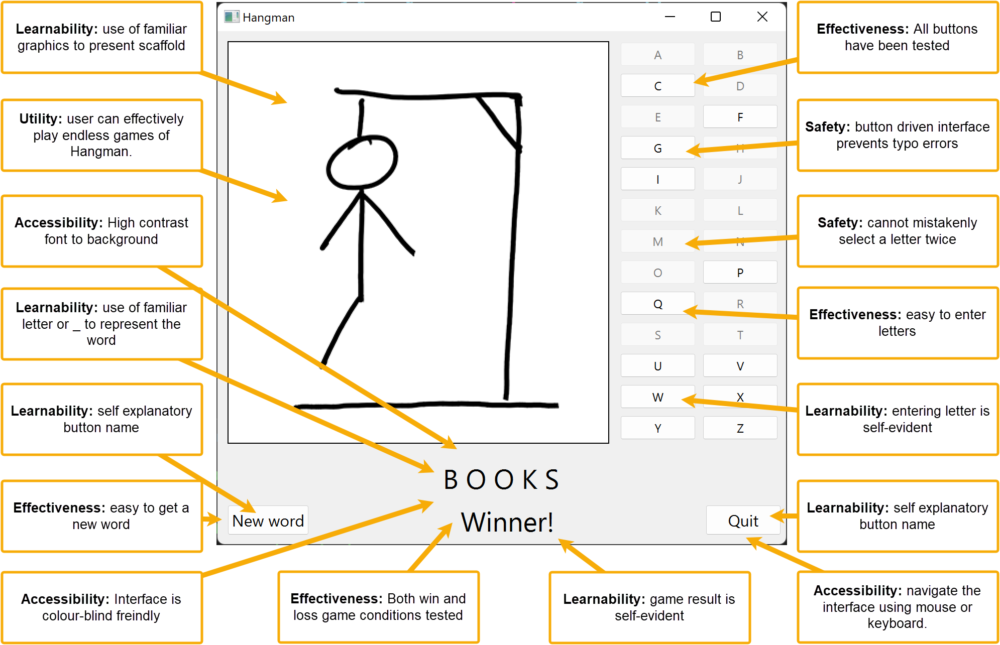

Unit 1: Develop UI and UX
Contents
Unit 1: Develop UI and UX#
The user needs to be central to the development of the User Interface (UI) and the User Experience (UX). They are examples of human-first design, or, to be more specific, user-first design.
This might seem obvious, but the history of digital solutions is littered with strewn with examples of developer-first design, where the solution is based on the developer’s needs. Even worst is machine-first design where the solution is based on the needs of the machine running it.
So what is the difference between UI and UX.
UX design is all about the overall feel of the experience, while UI design is all about how the product’s interfaces look and function. [Lamprecht, 2022]
Although they are two distinct fields, they do have significant overlap. For the purposes of this course, we will address them together.
Useability Principles#
Usability is a measure of how well a specific user in a specific context can use a product/design to achieve a defined goal effectively, efficiently and satisfactorily. Designers usually measure a design’s usability throughout the development process — from wireframes to the final deliverable. [Foundation, 2014]
A design’s usability depends on how well its features accommodate users’ needs and contexts.
In Digital Solutions we will focus on five usability principles:
accessibility
effectiveness
safety
utility
learnability
Accessibility#
Accessibility is the ability to be used by many different people, even people with disabilities.
Accessibility guidelines are based on four principles (often referred to as POUR):
Perceivable: Information and user interface components must be presented to users in ways that they can perceive. For example, it’s important to present information that can be perceived in different ways, where a user can adjust colour contrast or font size, or view captions for videos.
For the purposes of this course, we will use the Colour Contrast Analyser (CCA) to assess the perceivability of the fonts of our UI.
Operable: User interface components and navigation must be operable to users in ways they can operate. For example, required interactions can be performed using keyboard or voice commands.
Understandable: Information and user interface operation must be understandable. For example, information and instructions are clear and navigation methods are easy to understand and use.
Robust: Content must be robust enough so that it can be interpreted reliably by a wide variety of users and types of assistive technologies. As technologies evolve, code and content should remain accessible for users of common and current assistive devices and tools.
Effectiveness#
Effectiveness is the ability of users to use the system to do the work they need to do.
Users need to be able to interact with a digital solution quickly and easily; and outputs need to be presented clearly in a way that can be easily interpreted by the user. Effectiveness includes reliability, which means the solution needs to be constant, dependable, consistent and repeatable. When you evaluate effectiveness you are looking for things that work or do not work as expected.
Safety#
Safety is the ability for users to make errors and recover from the mistake.
Safety considers the questions:
How many errors do users make?
How severe are these errors?
How easily can the user recover from the errors?
Safety is a rarely considered usability goal. Safety is protecting the users from dangerous errors, for example losing all the user’s data or protecting the user’s confidential information.
Examples of designing safely could include:
Not putting the delete button next to the save button.
Providing users various ways to recover from errors, both by reverting to a priority state or progressing the system to the correct state. For example in a word processor, the writer can use control-z to correct, back button, or retype to correct mistakes.
Making sure that input text field are wide enough to hold all the required data.
Limiting possible user responses with UI components like combo boxes, check boxes and radio buttons.
It is always better to design interfaces that prevent errors from happening in the first place.
Evaluating for safety is really about considering all the things that users could do wrong and finding ways to prevent them from making the error. This will be different for every interface or digital solution.
To evaluate for safety / error prevention you essentially need to write a checklist of everything that could be done wrong and make sure that steps are taken to prevent as many of these errors as possible. The curse of knowledge dictates that you will underestimate how your solution will be misused, so it recommended to enlist the assistance of non-developers in this process.
Ways to address safety#
Provide support information.
Display sufficient instructional information for uses to interact correctly with the system.
Design for working memory limitations. Young adults can typically remember between 3 and 5 pieces of information at a time.
Spell out abbreviations, initializes, and acronyms, and immediately follow them by the abbreviation, in the first instance.
Display sufficient content to allow users to act.
Use descriptive labels for objects and items.
Organize information clearly.
Ensure that necessary information is displayed.
Eliminate error-prone conditions.
Input boxes should be wide enough for users to see and edit standard queries on the site.
Avoid misleading cues to click.
Phrasing of menu items: use familiar and consistent terminology, ensure that items are distinct from one another, use consistent and concise phrasing, and position the key words to the left of the text string.
Place important Items consistently.
Highlighting information.
Minimize user data entry.
Minimize visual clutter so that formatting and icons are effective for providing emphasis and implying priorities: draw attention to important information without introducing too much distraction.
Order lists appropriately.
Use informative feedback.
Alerts need to be compatible with, and exist within, the messaging framework
Utility#
Utility is the ability of the system to provide all the functionality that users need.
It matters little that something is easy if it’s not what you want. There are many ways that a solution can be useful, and will be strongly influenced by users’ needs and the desired impacts of the solution.
Learnability#
Learnability is concerned with how easy a system is to learn.
How intuitive or memorable is the digital solution? Does it match pre-existing patterns in other digital products? For example, does it function like a store if it is a store? Does the game use standardised controls like arrow keys of WASD?
Learnability includes how quickly and easily users can learn to:
Find information
Complete tasks
Navigate the digital solution
Symbolising UI#
There are many different ways to symbolise a UI. In our course, you will only need to use mock-ups, but it is useful to know and understand what the other methods are used for.
Sketching#
User Interface sketching refers to sketching out the basics of a user interface, most often using pen and paper. It occurs before getting into wireframing, prototyping and coding. Sketches are quick and dirty. Don’t worry about the specifics of design or functionality in a UI sketch. A UI sketch should simply serve to help you eliminate bad ideas and brainstorm good ideas about how to bring your proposed product to the screen. The sketch should help you translate idea to interface in the minimum possible time. At the end of the UI sketching process you should know that you’ve figured out the absolute best way to bring your product to the screen.
Wireframes#
A wireframe gives you a rough idea of the input, how it is processed, how the screens will be presented, how the elements will look etc. A wireframe tells you what happens when an action is taken using the app. If there is content on the screen, wireframe gives you an idea of how that data or element will be presented in the app. The goal of a wireframe is to quickly and easily communicate:
The contents of the page
The page structure and layout
The app’s functions
In other words, a wireframe describes the basic structure, functions, and content of the page.

Mockup#
The wireframe shows the basic structure with the contents of the app and the functions, whereas a mockup adds design, colour, style, and typography to it. A mockup shows a realistic picture of how things will shape up in the end. The visual representation of the mockup will show what all will be covered in the final picture.
We will be using two different tools for creating Mockups:
FIA1: Adobe XD
FIA2: QT Designer

Prototype#
A prototype is a final visual image of the app. The prototype acts just like the app to some extent. The code used for development is not used for creating a prototype, but it can still have clickable buttons and other components of a real app and may demonstrate some of the functionality.
Application interface flowchart#
An application interface flowchart connects the screens of an application together to indicate the flow from one screen to another as a result of user interactions. Interactions are sometime written on the flowlines.
Annotating#
Annotating the UI is an import way to show how you have incorporated the Useability Principles into your UI design.
Each annotations should have the following features:
A description of how you have incorporated a Useability Principle.
An arrow pointing to an example of this on the UI.
Each annotation should only deal with one principle and one example.
The Useability Principle should be in bold.
Below is an example of an annotated mockup.
